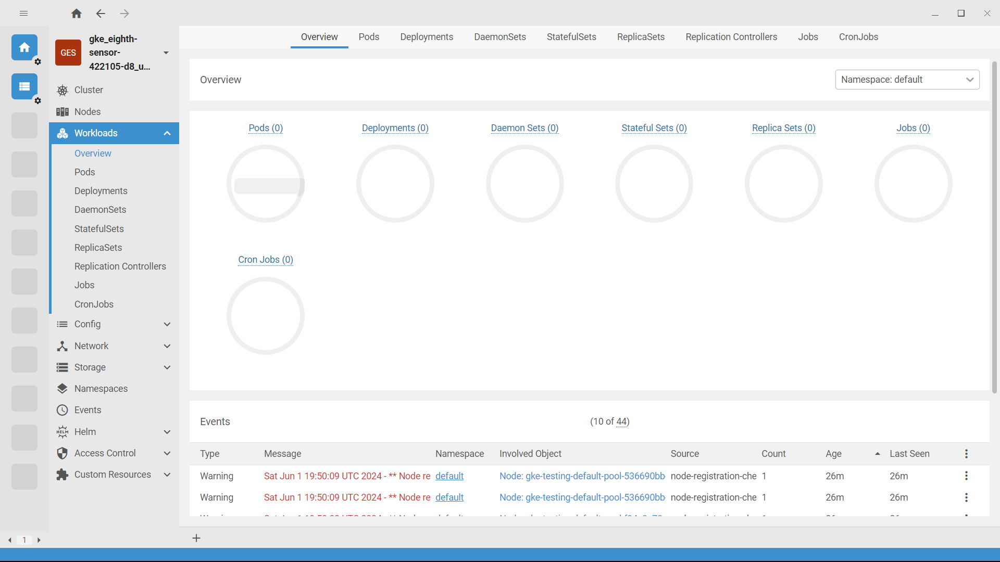

Migrate To Kubernetes Environment
To Migrate to the Kubernetes environment, we will be using the same place-order example by changing the required properties and dependencies.
-
You can get the fully updated source code here.
it is recommended to read the k8s reference documentation to have a better understanding.
Prepare the kubernetes environment
At the first step, you have to create your kubernetes environment for deploying the set of applications. Due to the fact that the demo is quite large, I will be using GCP cloud instead of using local environment. It doesn’t matter if you are able to deploy your entire k8s things in your local environment you are totally free to use it.
Make sure to install kubectl clint.
And if you are using GCP cloud, make sure to install gcloud cli to access the cluster.
If you prefer to use a GUI client, it will be quite easy to understand and to access the logs and terminals if you are new to k8s.
It is recommended you to use OpenLens kubernetes GUI client.
|
After connecting the cluster into the OpenLens you can the dashboard like below.

Now the cluster is ready.
Updating pom.xml file.
In the place-order example, we used Eureka-Service as the discovery server and service registry. But in general, if are moving to the Kubernetes Environment, Kubernetes supports in-built service registry and service discovery features.
But know that Eureka-server cached registry was used for electing the leader for doing the retry and other StackSaga scheduling. Then, if we don’t use Eureka-server, how StackSaga selects the leader in the Kubernetes Environment?
StackSaga provides a dependency called stacksaga-connect-k8s-support
and it uses internally kubernetes lease leader election for leader election.
Read more..
So then you have to remove the stacksaga-connect-eureka-support and spring-cloud-starter-netflix-eureka-client
and add the stacksaga-connect-k8s-support.
Here is the updated pom.xml for order-service.
<?xml version="1.0" encoding="UTF-8"?>
<project xmlns="http://maven.apache.org/POM/4.0.0"
xmlns:xsi="http://www.w3.org/2001/XMLSchema-instance"
xsi:schemaLocation="http://maven.apache.org/POM/4.0.0 http://maven.apache.org/xsd/maven-4.0.0.xsd">
<modelVersion>4.0.0</modelVersion>
<parent>
<groupId>org.springframework.boot</groupId>
<artifactId>spring-boot-starter-parent</artifactId>
<version>2.7.0</version>
<relativePath/> <!-- lookup parent from repository -->
</parent>
<groupId>org.example</groupId>
<artifactId>order-service</artifactId>
<version>1.0-SNAPSHOT</version>
<properties>
<maven.compiler.source>8</maven.compiler.source>
<maven.compiler.target>8</maven.compiler.target>
<project.build.sourceEncoding>UTF-8</project.build.sourceEncoding>
<spring-cloud.version>2021.0.3</spring-cloud.version>
</properties>
<dependencies>
<dependency>
<groupId>org.springframework.boot</groupId>
<artifactId>spring-boot-starter-web</artifactId>
</dependency>
<dependency>
<groupId>org.springframework.boot</groupId>
<artifactId>spring-boot-starter-test</artifactId>
<scope>test</scope>
</dependency>
<dependency>
<groupId>org.springframework.boot</groupId>
<artifactId>spring-boot-starter-actuator</artifactId>
</dependency>
<dependency>
<groupId>org.springframework.boot</groupId>
<artifactId>spring-boot-starter-data-jpa</artifactId>
</dependency>
<dependency>
<groupId>mysql</groupId>
<artifactId>mysql-connector-java</artifactId>
</dependency>
<dependency>
<groupId>org.projectlombok</groupId>
<artifactId>lombok</artifactId>
<optional>true</optional>
</dependency>
<dependency>
<groupId>org.springframework.boot</groupId>
<artifactId>spring-boot-starter-aop</artifactId>
</dependency>
<!--removed eureka clint-->
<!--<dependency>
<groupId>org.springframework.cloud</groupId>
<artifactId>spring-cloud-starter-netflix-eureka-client</artifactId>
</dependency>-->
<dependency>
<groupId>org.stacksaga</groupId>
<artifactId>stacksaga-spring-boot-starter</artifactId>
<version>1.0.0</version>
</dependency>
<dependency>
<groupId>org.stacksaga</groupId>
<artifactId>stacksaga-mysql-support</artifactId>
<version>1.0.0</version>
</dependency>
<!--removed stacksaga-connect-eureka-support-->
<!--<dependency>
<groupId>org.stacksaga</groupId>
<artifactId>stacksaga-connect-eureka-support</artifactId>
<version>1.0.0</version>
</dependency>-->
<!--added stacksaga-connect-k8s-support-->
<dependency>
<groupId>org.stacksaga</groupId>
<artifactId>stacksaga-connect-k8s-support</artifactId>
<version>1.0.0</version>
</dependency>
</dependencies>
<dependencyManagement>
<dependencies>
<dependency>
<groupId>org.springframework.cloud</groupId>
<artifactId>spring-cloud-dependencies</artifactId>
<version>${spring-cloud.version}</version>
<type>pom</type>
<scope>import</scope>
</dependency>
</dependencies>
</dependencyManagement>
</project>
Make sure to keep the spring-cloud-dependencies as it is in the dependencyManagement section.
Because stacksaga-connect-k8s-support uses it for managing the internal dependencies.
|
Adding a new profile with a new property file.
Now let’s create a new profile and a configuration file for k8s.
| Spring Profiles provide a way to segregate parts of your application configuration and make it only available in certain environments. |
services: (1)
payment-service: http://payment-service-service
stock-service: http://stock-service-service
user-service: http://user-service-service
server:
port: 8080
spring:
application:
name: order-service
stacksaga:
component-scan: org.example.aggregator (2)
app-release-version: 1.0.0 (2)
cloud:
k8s:
namespace: default (3)
service-host: http://${spring.application.name}-service (4)
(5)
leader-election:
lease-duration: 3m
renew-deadline: 1m
retry-period: 30s
connect:
(6)
admin-urls:
- http://stacksaga-admin-server-service:4444
(7)
admin-username: order-service-application-user
admin-password: dtj8lEfssVUCsaHe
datasource:
(8)
mysql:
jdbc-url: jdbc:mysql://localhost:3306/order-service?createDatabaseIfNotExist=true
username: root
password: mafei
driver-class-name: com.mysql.cj.jdbc.Driver
management:
endpoint:
env:
enabled: true
endpoints:
web:
exposure:
include: "*"
info:
app:
author: mafei
name: ${spring.application.name}
version: ${stacksaga.app-release-version}
logging:
level:
org:
stacksaga: trace
springframework: debug
root: infoHighlights
| 1 | The services' Urls that we access inside the service. The hosts should be the exact same with the k8s service name. If you have multiple instances for one service, the load-balancing part also does by kubernetes proxy. |
| 2 | The path for scans the aggregators. We have added the path to the aggregator layer. |
| 3 | stacksaga-connect-k8s-support fetches the pod’s data from the k8s control plane.
so we have to provide which namespace the pod is deployed. |
| 4 | The host name (k8s service-name) of the order-service application in kubernetes. See the manifest. This is used for sharing the data across the siblings (If the current pod is the leader, spreads the execution with other followers). |
| 5 | To acquire the leader, all the pods try to update a lease object to the k8s. These properties say that how to update the lease. See more details. |
| 6 | The URL of the admin server. It can be provided a list of admin URLs for high-availability (HA). In case one admin server goes down, the request can be retried with other available services. See more how the admin-server interacts in Stacksaga architecture. |
| 7 | You know that to communicate with admin-server, and We have to create a user account for each service to communicate with the admin-server.
After creating a user-account, you will have the username and password.
See how to create a user account for utility service]. |
| 8 | You have to provide the data sources properties for StackSaga event-store. Due to you have selected stacksaga-mysql-support. |
Creating the kubernetes RBAC related manifest.
You already know that we should create kubernetes user-account for accessing the kubernetes API to fetch some metadata and leader election.
Creating UserAccount Manifest
apiVersion: v1
kind: ServiceAccount
metadata:
name: order-service-service-account
namespace: defaultCreating ClusterRole Manifest
apiVersion: rbac.authorization.k8s.io/v1
kind: ClusterRole
metadata:
name: leader-election-lease-role
namespace: default
rules:
- apiGroups: [ "" ]
resources: [ "pods","nodes" ]
verbs: [ "get" ]
- apiGroups: [ "coordination.k8s.io" ]
resources: [ "leases"]
verbs: [ "get", "create", "update", "patch" ]Creating ClusterRoleBinding Manifest
apiVersion: rbac.authorization.k8s.io/v1
kind: ClusterRoleBinding
metadata:
name: order-service-service-account-leader-election-lease-role
namespace: default
subjects:
- kind: ServiceAccount
name: order-service-service-account
namespace: default
roleRef:
kind: ClusterRole
name: leader-election-lease-roleCreating Database Configuration manifests.
Database Deployment manifest
kind: StatefulSet
metadata:
name: mysql-common-server
spec:
replicas: 1
serviceName: mysql-common-server
selector:
matchLabels:
app: mysql
type: common
template:
metadata:
labels:
app: mysql
type: common
spec:
containers:
- name: mysql-container
image: mysql:8.0
ports:
- name: mysql-port
protocol: TCP
containerPort: 3306
env:
- name: MYSQL_ROOT_PASSWORD
value: "admin"
volumeMounts:
- name: mysql-common-storage
mountPath: /var/lib/mysql
volumeClaimTemplates:
- metadata:
name: mysql-common-storage
spec:
storageClassName: standard
accessModes:
- ReadWriteOnce
resources:
requests:
storage: 2GiCreating API-cloud-Gateway Server manifests.
Creating a new k8s profile and property file.
server:
port: 8080
management:
info:
env:
enabled: true
endpoints:
web:
exposure:
include: "*"
info:
app:
author: mafei
name: ${spring.application.name}
version: 1.0.0
spring:
application:
name: api-gateway
cloud:
gateway:
globalcors:
cors-configurations:
'[/**]':
allowedOrigins:
- "*"
allowedMethods:
- "*"
allowedHeaders:
- "*"
exposedHeaders:
- "*"
default-filters:
- DedupeResponseHeader=Access-Control-Allow-Credentials Access-Control-Allow-Origin
routes:
- id: api-user-service
uri: http://user-service
predicates:
- Path=/api/user-service/**
filters:
- RewritePath=/api/user-service/?(?<segment>.*), /$\{segment}
order: 0
- id: api-order-service
uri: http://order-service
predicates:
- Path=/api/order-service/**
filters:
- RewritePath=/api/order-service/?(?<segment>.*), /$\{segment}
order: 1
logging:
level:
root: debug
org:
spring: debugAPI-cloud-Gateway Deployment manifest
apiVersion: apps/v1
kind: Deployment
metadata:
name: api-gateway
spec:
selector:
matchLabels:
app: api-gateway
template:
metadata:
labels:
app: api-gateway
spec:
containers:
- name: api-gateway
image: mafeidev/stacksaga-k8s-demo-1-api-gateway:1.0.3
ports:
- containerPort: 8080
env:
- name: SPRING_PROFILES_ACTIVE
value: k8s
- name: SPRING_CLOUD_GATEWAY_DEFAULT-FILTERS
value: DedupeResponseHeader=Access-Control-Allow-Credentials Access-Control-Allow-Origin
- name: SPRING_CLOUD_GATEWAY_GLOBALCORS_ADD-TO-SIMPLE-URL-HANDLER-MAPPING
value: "true"Creating StackSaga Admin Server manifests.
Admin-Database Deployment manifest
apiVersion: apps/v1
kind: StatefulSet
metadata:
name: mysql-admin-server
spec:
replicas: 1
serviceName: mysql-admin-server
selector:
matchLabels:
app: mysql
type: admin
template:
metadata:
labels:
app: mysql
type: admin
spec:
containers:
- name: mysql-container
image: mysql:8.0
ports:
- name: mysql-port
protocol: TCP
containerPort: 3306
env:
- name: MYSQL_ROOT_PASSWORD
value: "admin"
volumeMounts:
- name: mysql-storage
mountPath: /var/lib/mysql
volumeClaimTemplates:
- metadata:
name: mysql-storage
spec:
storageClassName: standard
accessModes:
- ReadWriteOnce
resources:
requests:
storage: 3GiAdmin-Database Service manifest.
apiVersion: v1
kind: Service
metadata:
name: mysql-admin-server
labels:
app: mysql
type: admin
spec:
clusterIP: None
selector:
app: mysql
type: admin
ports:
- name: mysql-port
protocol: TCP
port: 3306Admin-Server Deployment manifest
apiVersion: apps/v1
kind: Deployment
metadata:
name: stacksaga-admin-server-deployment
labels:
app: stacksaga-admin-server
spec:
selector:
matchLabels:
app: stacksaga-admin-server
replicas: 1
template:
metadata:
labels:
app: stacksaga-admin-server
spec:
containers:
- name: stacksaga-admin-server-container
image: stacksaga/stacksaga_admin_mysql:1.0.6
ports:
- containerPort: 4444
env:
- name: SPRING_DATASOURCE_URL
value: jdbc:mysql://mysql-admin-server-0.mysql-admin-server.default.svc.cluster.local:3306/stacksaga_admin?createDatabaseIfNotExist=true
- name: SPRING_DATASOURCE_USERNAME
value: root
- name: SPRING_DATASOURCE_PASSWORD
value: admin